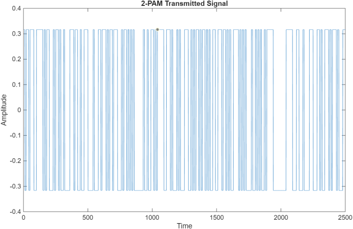
FIGURE 01
2-PAM transmitted samples
The waveform uses 2 discrete amplitude levels. Higher M packs more bits into each symbol but reduces decision spacing at comparable power normalization.
MATLAB and Simulink evaluation of binary and M-ary pulse-amplitude modulation through an AWGN channel, with matched filtering and BER/SER analysis.
The project investigates how matched-filter receivers recover pulse-amplitude modulated digital symbols in noise. Transmitted waveforms and bit/symbol error rates are compared across 2-PAM to 1024-PAM. MATLAB trends are presented separately from the five Simulink-versus-theory figures, making both observed behavior and model limitations visible.

The waveform uses 2 discrete amplitude levels. Higher M packs more bits into each symbol but reduces decision spacing at comparable power normalization.
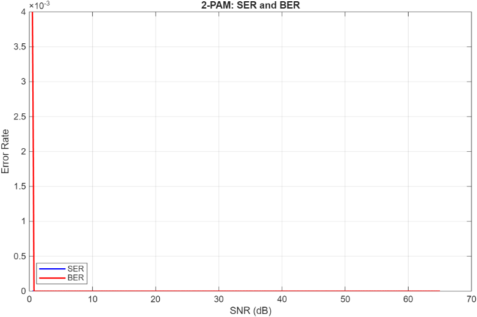
The reported error rates decline as SNR increases. With 2 levels, reliable detection generally requires more SNR than for lower-order PAM under comparable conditions.
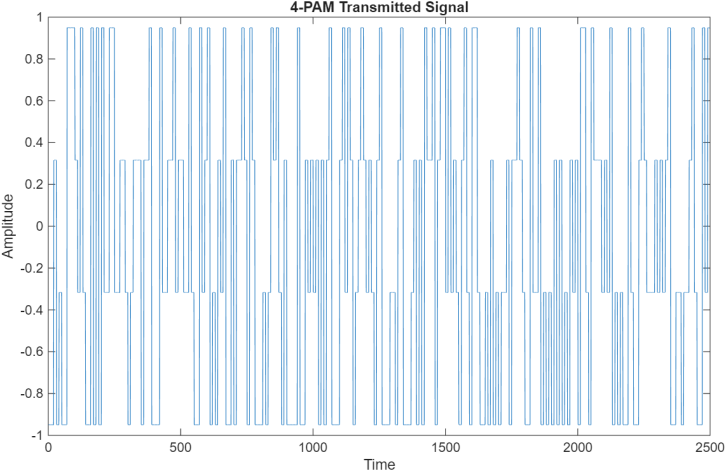
The waveform uses 4 discrete amplitude levels. Higher M packs more bits into each symbol but reduces decision spacing at comparable power normalization.
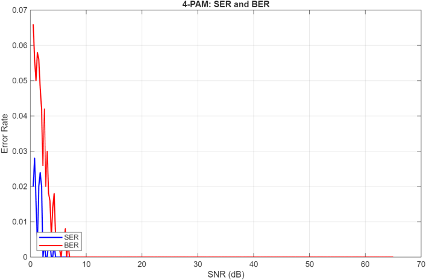
The reported error rates decline as SNR increases. With 4 levels, reliable detection generally requires more SNR than for lower-order PAM under comparable conditions.
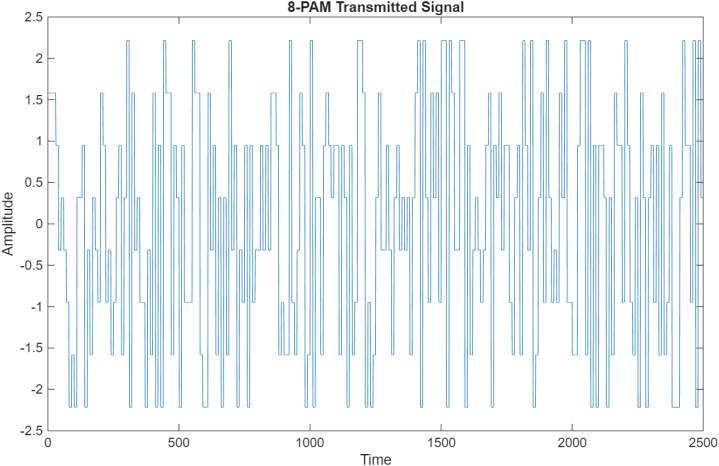
The waveform uses 8 discrete amplitude levels. Higher M packs more bits into each symbol but reduces decision spacing at comparable power normalization.

The reported error rates decline as SNR increases. With 8 levels, reliable detection generally requires more SNR than for lower-order PAM under comparable conditions.
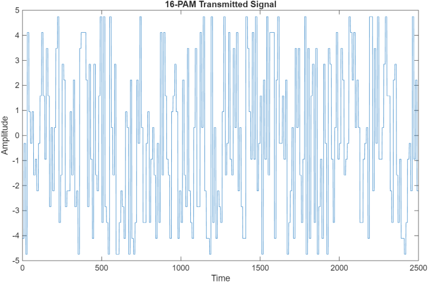
The waveform uses 16 discrete amplitude levels. Higher M packs more bits into each symbol but reduces decision spacing at comparable power normalization.

The reported error rates decline as SNR increases. With 16 levels, reliable detection generally requires more SNR than for lower-order PAM under comparable conditions.

The waveform uses 32 discrete amplitude levels. Higher M packs more bits into each symbol but reduces decision spacing at comparable power normalization.
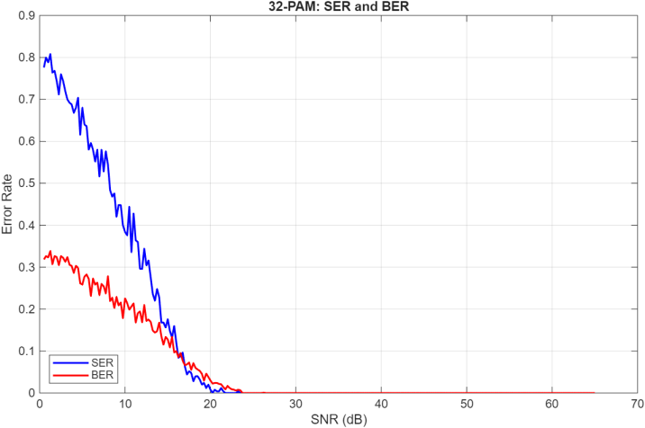
The reported error rates decline as SNR increases. With 32 levels, reliable detection generally requires more SNR than for lower-order PAM under comparable conditions.
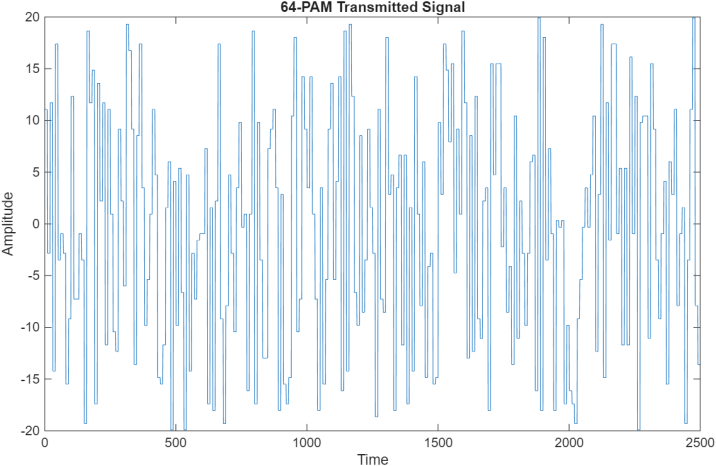
The waveform uses 64 discrete amplitude levels. Higher M packs more bits into each symbol but reduces decision spacing at comparable power normalization.
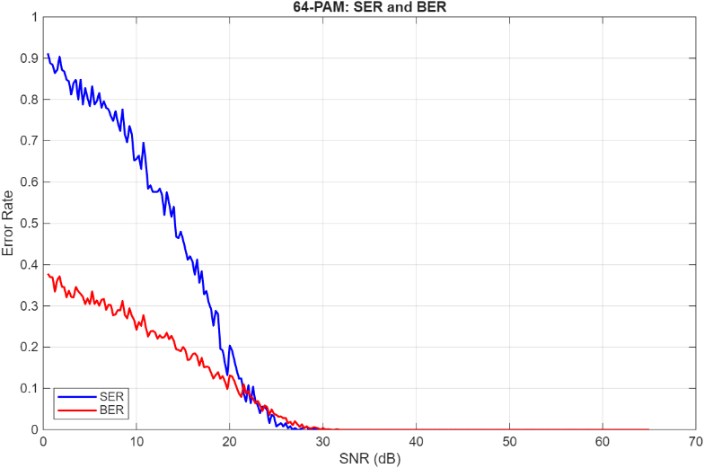
The reported error rates decline as SNR increases. With 64 levels, reliable detection generally requires more SNR than for lower-order PAM under comparable conditions.
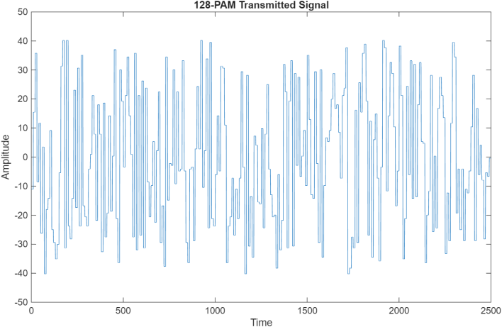
The waveform uses 128 discrete amplitude levels. Higher M packs more bits into each symbol but reduces decision spacing at comparable power normalization.

The reported error rates decline as SNR increases. With 128 levels, reliable detection generally requires more SNR than for lower-order PAM under comparable conditions.
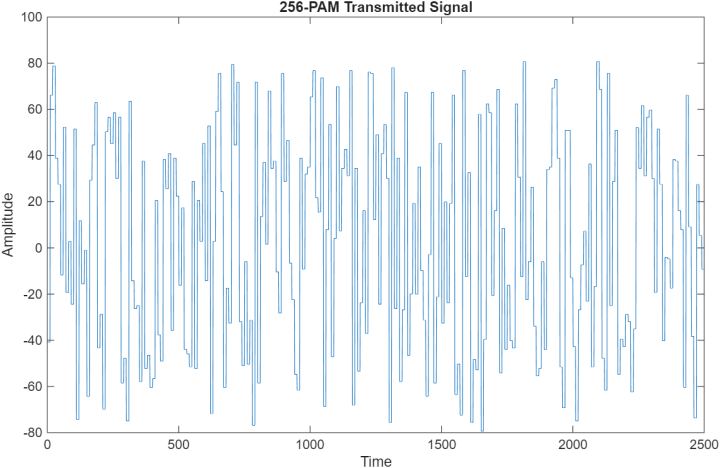
The waveform uses 256 discrete amplitude levels. Higher M packs more bits into each symbol but reduces decision spacing at comparable power normalization.
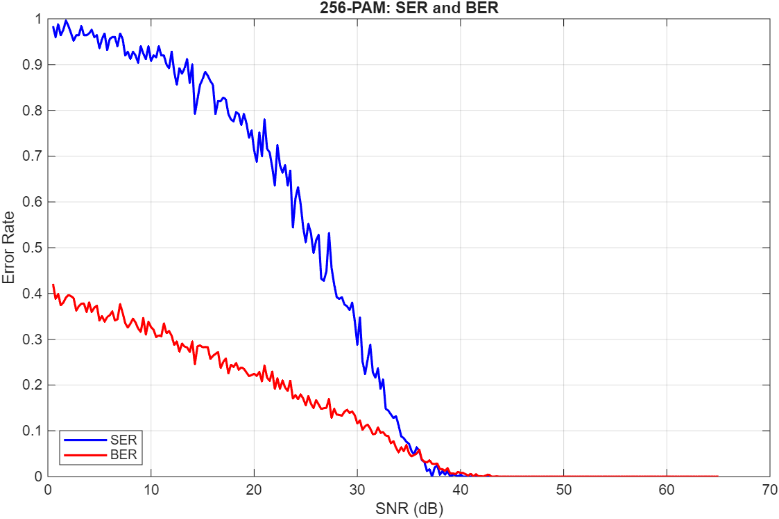
The reported error rates decline as SNR increases. With 256 levels, reliable detection generally requires more SNR than for lower-order PAM under comparable conditions.

The waveform uses 512 discrete amplitude levels. Higher M packs more bits into each symbol but reduces decision spacing at comparable power normalization.
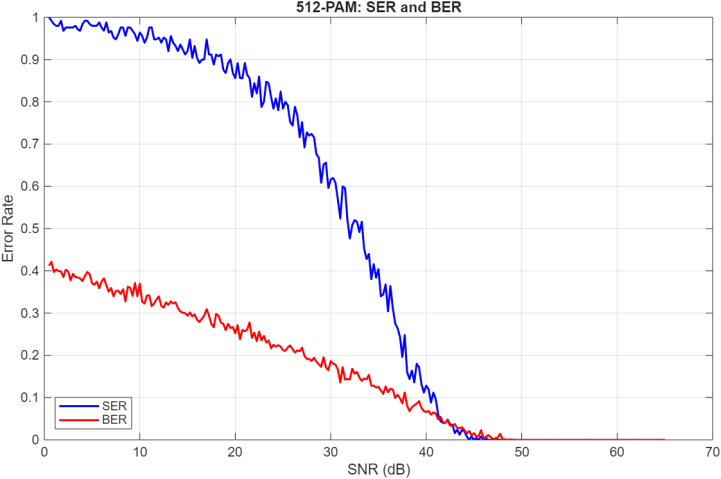
The reported error rates decline as SNR increases. With 512 levels, reliable detection generally requires more SNR than for lower-order PAM under comparable conditions.
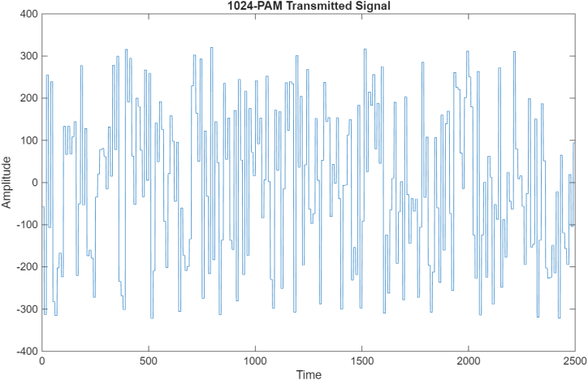
The waveform uses 1024 discrete amplitude levels. Higher M packs more bits into each symbol but reduces decision spacing at comparable power normalization.
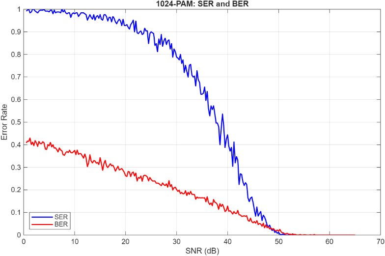
The reported error rates decline as SNR increases. With 1024 levels, reliable detection generally requires more SNR than for lower-order PAM under comparable conditions.
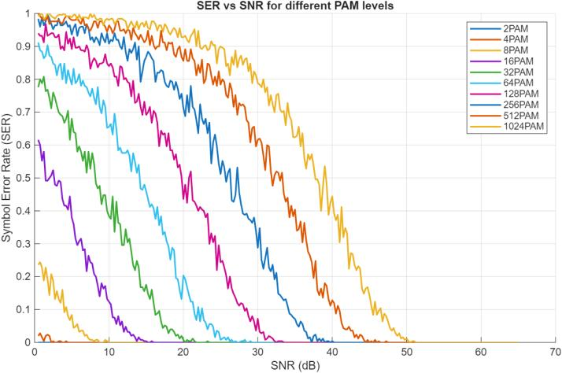
The multi-curve comparison shows the rising SNR needed as the number of levels increases; note that visible highlights in the source report are retained.
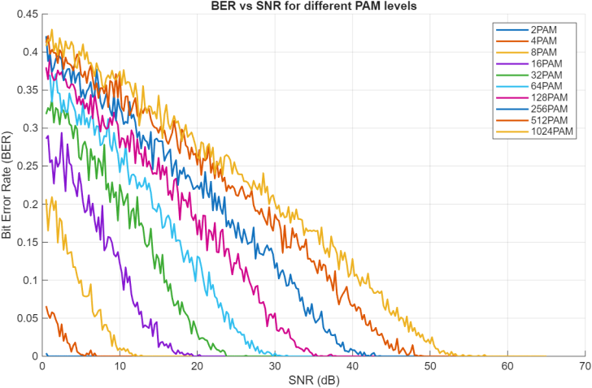
Higher-order constellations generally show elevated bit-error probability at the same input SNR.
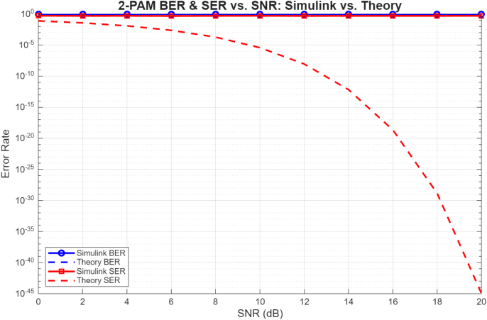
The displayed simulation curves appear substantially flatter than the theoretical curves, so this is evidence of a model/configuration discrepancy, not agreement.

Theoretical BER/SER decline with SNR, while simulated error measurements remain near the top of the plotted range.
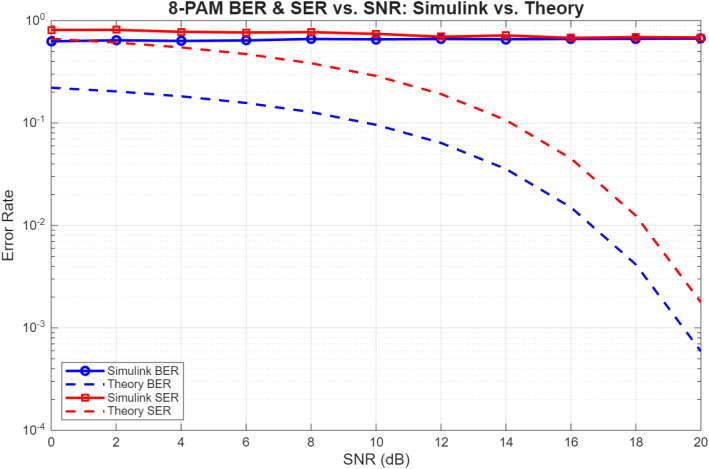
Simulated and predicted response differ markedly over the displayed SNR range; interpretation needs careful model checks.
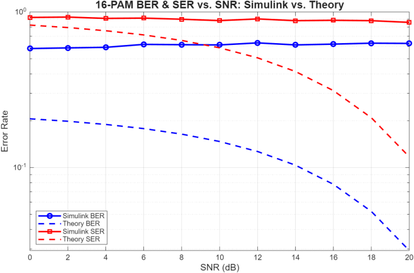
The results suggest possible differences in SNR definitions, demapping, sampling or error counters; no root cause is established by the report.
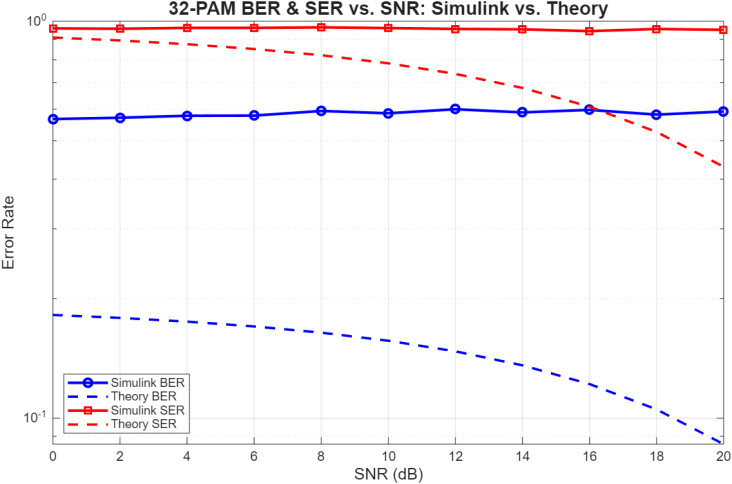
The discrepancy persists with 32 levels, preventing a defensible claim that simulated and theoretical BER/SER match.
The report preserves the full methodology and submitted results. The code archive contains the original uploaded scripts and the Simulink model. The graphs shown above are sourced from the report and are not presented as new simulation runs.